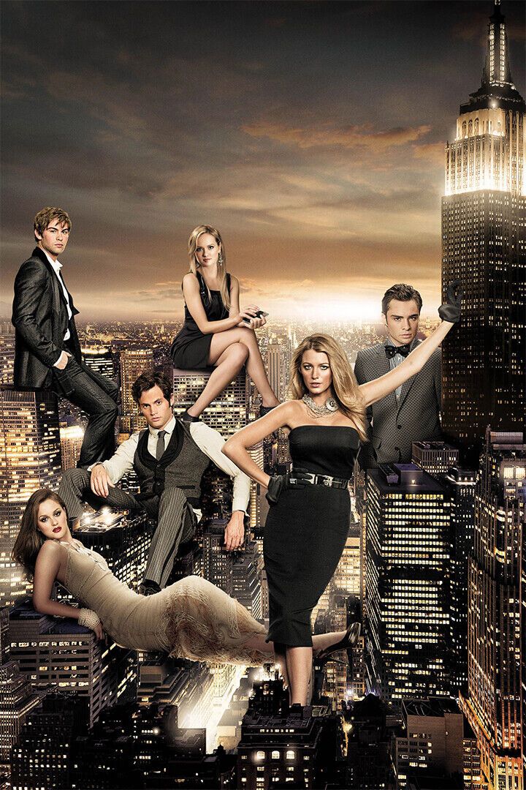

About Gossip Girl
Gossip Girl is a teen drama series that aired from 2007 to 2012. It follows the lives of elite teens on Manhattan's Upper East Side as they navigate friendships, romances, and scandals. Created by Cecily von Ziegesar, the show is a cultural phenomenon known for its iconic fashion, unforgettable characters, and juicy drama. The series dives deep into the glamorous and sometimes treacherous world of New York City's wealthy elite, where every secret has a price and every move is watched by the mysterious Gossip Girl.
The show not only revolutionized teen drama but also influenced fashion trends and gave us unforgettable catchphrases. From Blair Waldorf's headbands to Chuck Bass's charm, each character brought something special to the screen.
 |
 |
"Whoever said money doesn't buy happiness didn’t know where to shop."
Why I Love Gossip Girl
- The iconic fashion, from Blair's headbands to Serena's effortless style.
- The gripping and unpredictable storylines that kept me hooked.
- The complex relationships and rivalries that felt so real.
- The stunning New York City backdrop that became a character itself.
- The unforgettable one-liners and dramatic reveals.
My Favorite Characters in Order
- Blair Waldorf
- Chuck Bass
- Nate Archibald
- Dorota
- Rufus Humphrey
- Lily van der Woodseon
- Serena van der Woodsen
- Dan Humphrey
- Jenny Humphrey
- Vanessa Abrams
Seasons Overview
- Season 1
- Introduction to Serena and Blair
- Dan and Serena’s love story begins
- Season 2
- Blair’s romance with Chuck
- The Met steps rule is introduced
- Season 3
- Serena's career challenges
- New characters shake things up
- Season 4
- Blair and Chuck's power struggles
- Serena’s love triangle
- Season 5
- Dan’s rise as a writer
- Blair’s royal wedding drama
- Season 6
- The truth about Gossip Girl is revealed
- A perfect ending for fan-favorite couples
Fun Facts
| Fact | Learn More |
|---|---|
| Set in NYC | NYC Filming Locations |
| Inspired by a book series | Book Series Info |
| Known for its fashion | Costume Design |
| Iconic soundtrack | Soundtrack Details |
Contact
Email: gossipgirlfans@superfanpage.com
Phone: +1 234-567-89